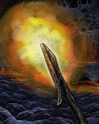
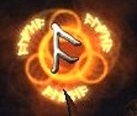

ORISONS DI BAZARÀK
Scorching Weapon
| Sfera di riferimento | Combat |
| Range | 9 metri |
| Duration | 2 round |
| Area of Effect | Un'arma |
| Components | V, S |
| Casting Time | 5 |
| Saving Throw | None |
Questo orison può essere lanciata su una qualsiasi arma sia impugnata da una creatura che presti il suo consenso a ricevere la magia e si trovi entro il raggio di azione dell'incantesimo. Una volta lanciata la magia la lama dell'arma (o la parte ad essa assimilabile) diventerà incandescente. L'incandescenza non procura alcun fastidio al possessore e non danneggia la lama. Durante l'effetto dell'incantamento, però, ogni volta che chi utilizza quest'arma in combattimento colpisce una creatura la stessa subirà 1 danno supplementare da calore. Occorre notare che, durante l'effetto della magia, la lama non emana fiamme e non è in grado di incendiare oggetti. Si noti, inoltre, che si tratta di danni da comune calore non considerabili di per sé danni magici.
1° LIVELLO DI POTERE
| Blood Weapon | Necromancy |
| Sphere : | Necromancy |
| Range : | Tocco |
| Components : | V, S, M |
| Duration : | Speciale |
| Casting Time : | 1 round |
| Area of Effect : | Un'arma |
| Saving Throw : | None |
 |
Questo
incantesimo può essere lanciato su una qualsiasi arma da corpo a corpo.
La magia, però, avrà effetto unicamente qualora l'arma sia impugnata ed
utilizzata da un fedele di Bazaràk. La magia permette al fedele di
accumulare il sangue dei propri avversari, fluido sacro per la propria
divinità, al fine di ottenere una speciale rigenerazione delle ferite di
origine demoniaca. In pratica, quando un determinato fedele di Bazaràk
combatte utilizzando un'arma incantata con questo incantesimo costui può
accumulare temporaneamente punti sangue. In particolare, ogni attacco
andato a segno contro una qualsiasi creatura dotata di corpo organico di
tipo animale (non quindi esseri come i non morti, i costruiti, i
vegetali, i melmoidi e le creature estraplanari) permette di accumulare
1 punto sangue. E' necessario che l'attacco abbia provocato almeno un
punto danno alla vittima. Bazaràk, inoltre, considererà validi solo gli
attacchi posti in essere nel corso di veri e propri combattimenti che
risultino in qualche modo impegnativi per il fedele (ad insindacabile
giudizio del Dungeon Master). Attacchi contro prigionieri, creature che
si siano arrese e creature estremamente deboli rispetto al fedele non
saranno in alcun caso considerati validi. Quando il fedele avrà
accumulato 5 punti sangue l'arma sarà carica e non permetterà al fedele
di accumularne ulteriori. Da quel momento in poi, però, il fedele potrà
attivare l'incantamento alzando l'arma ed invocando Bazaràk. Si tratta
di un'azione complessa dalla durata dell'intero round che richiede
componenti somatici, vocali e materiali (ossia l'arma di sangue carica)
ma non il mantenimento della concentrazione. Al termine del round il
fedele rigenererà 1d6+2 (+3 se è utilizzata un'arma rituale del culto di
Bazaràk) punti ferita persi precedentemente e la magia terminerà
definitivamente.
Si noti che si tratta di una potente rigenerazione di origine
demoniaca la quale può essere indirizzata direttamente sui danni
prodotti da tiri critici per curarli. In ogni caso, però, questa
rigenerazione non cura le emorragie. Se questo incantesimo è lanciato su
un'arma incantata con l'incantamento minore di Bazaràk "Bloodthirsty
Weapon" il fedele potrà accumulare fino ad 8 punti sangue. Qualora il
fedele accumuli questo ammontare, quando attiverà l'effetto magico
rigenererà 1d8+3 (+4 se è utilizzata un'arma rituale del culto di
Bazaràk) punti ferita persi precedentemente e la magia terminerà
definitivamente. |
| Plunder of Bazaràk | Conjuration |
| Sphere : | Creation |
| Range : | Tocco |
| Components : | V, S, M |
| Duration : | Istantanea |
| Casting Time : | 1 round |
| Area of Effect : | Speciale |
| Saving Throw : | None |
Questo incantesimo fonde insieme lo spirito di avarizia e l'attitudine al saccheggio propria dei fedeli di Bazaràk. Qualora, infatti, a seguito di un qualsiasi saccheggio o razzia, il chierico abbia ottenuto un certo ammontare di monete d'oro, lo stesso potrà inserire queste monete nel sacco rituale previsto da questa magia e lanciare l'incantesimo. Al termine del lancio della magia le monete presenti nel sacco risulteranno di un ammontare superiore par al 25% dell'originale (arrotondato per eccesso). Nel sacco possono essere inserite fino ad un massimo di 100 monete d'oro (potendo quindi risultare, dopo il lancio della magia, un ammontare pari a 125 monete d'oro. Le monete d'oro supplementari risulteranno del medesimo tipo di quelle originariamente inserite nel sacco. Si noti che solo le monete d'oro possono essere oggetto di questa magia, inoltre le stesse devono risultare il bottino di una qualsiasi forma di razzia violenta avvenuta nell'ambito del medesimo flusso di energia divina di Bazaràk. Non potranno ad esempio essere oggetto di questa magia le monete ottenute attraverso la commercializzazione di oggetti di valore (anche se ottenuti tramite razzia) o attraverso diverse attività illecite (si pensi ad un furto o ad una truffa). Il componente materiale di questo incantesimo è un sacco di canapa e velluto nero con incise rune votive di Bazaràk dal valore di 50 g.p., dal peso di 1 libbra e dalla capienza massima pari a 12 libbre. Questo componente non si consuma al lancio della magia.
| Spikedbeard | Alteration |
| Sphere : | Protection |
| Range : | 0 |
| Components : | V, S, M |
| Duration : | 3 round + 1 round / 2 livelli |
| Casting Time : | 4 |
| Area of Effect : | The Caster |
| Saving Throw : | Speciale |
Quando il chierico di Bazaràk lancia questa magia la sua folta barba diventa ispida ed appuntita disponendosi come gli aculei di un istrice. Per questo motivo, per tutta la durata della magia, tutti coloro attaccano il chierico in corpo a corpo con armi (ad eccezione delle Polearm) od attacchi fisici corrono il rischio di ferirsi ogni volta che effettuano un attacco. In particolare, ogni volta che una creatura attacca in corpo a corpo il chierico, la stessa dovrà superare un tiro salvezza su riflessi senza l'applicazione di alcun modificatore se non un bonus di +5% se l'attacco è effettuato utilizzando un'arma di dimensioni large. Ogni volta che la vittima fallisce il tiro salvezza la stessa subisce 1d3 danni da punta (perforazione). Si noti che le creature di taglia Gargantuan non subiscono i danni dalle punte della barba del chierico. La magia terminerà una volta trascorsi 3 round + 1 round supplementare ogni due livelli di lancio (4 round al 2° e 3° livello, 5 round al 4° e 5° livello, e così via...). Il componente materiale di questo incantesimo è il simbolo sacro del chierico ed uno spillone d'argento dal costo di 5 g.p. e dal peso di 0,2 di libbre che si consuma al lancio dell'incantesimo.
| Stalagmite of Bazaràk | Conjuration |
| Sphere : | Combat |
| Range : | 12 metri |
| Components : | V, S |
| Duration : | Istantanea |
| Casting Time : | 4 |
| Area of Effect : | Una creatura |
| Saving Throw : | Negates |
Questo incantesimo può essere lanciato unicamente nel sottosuolo (dungeons, tunnels, caverne o grotte) su una creatura che si trovi sul terreno (non ad esempio su creature volanti o arrampicate sul soffitto). Orbene, al lancio della magia una stalagmite appuntita spunterà sotto la creatura potendola ferire. La vittima della magia, infatti, dovrà superare un tiro salvezza su riflessi. Se il tiro salvezza riesce, la vittima avrà evitato lo spuntone roccioso, altrimenti sarà stata colpita dallo stesso subendo 1d10 danni comuni da punta. La stalagmite si sgretolerà svanendo in polvere subito dopo essere apparsa.
2° LIVELLO DI POTERE
| Cauterize | Alteration |
| Sphere : | Healing |
| Range : | Tocco |
| Components : | V, S, M |
| Duration : | Speciale |
| Casting Time : | 1 round |
| Area of Effect : | Una stecca metallica |
| Saving Throw : | Negates |
|
 |
Questo incantesimo può essere lanciato unicamente su una particolare stecca metallica sulla quali sono incise, in oro, rune della divinità Bazaràk. Questa stecca metallica, che rappresenta il vero e proprio componente materiale della magia che non si consuma e può essere riutilizzato, ha un peso pari a 2 libbre ed un valore pari a 50 monete d'oro. Quando il chierico lancia questa magia la parte terminale della stecca metallica diviene incandescente. Orbene, nel round immediatamente successivo a quello di lancio, il chierico (e solo costui) può passare la stecca incandescente su una qualsiasi ferita provochi la perdita di sangue di una creatura (emorragia). Si tratta di una comune azione fisica complessa che richiede che il chierico possa toccare la creatura. La creatura, quindi, subirà 1 punto danno da calore comune ma il medesimo calore demoniaco potrà cauterizzare la ferita fermando l'emorragia. La possibilità di cura dipende dal tipo di emorragia secondo il seguente schema, si noti che non potranno essere cauterizzate attraverso l'uso di questo incantesimo le emorragie interne. In caso di fallimento la magia potrà essere lanciata nuovamente per fermare la medesima emorragia. Probabilità di successo: Emorragia Minore: 95%; Emorragia Maggiore: 75%; Emorragia Letale: 50%. Al termine del round successivo a quello di lancio la magia terminerà immediatamente. |
| Chains of Imprisonment | Conjuration |
| Sphere : | Combat |
| Range : | 18 metri |
| Components : | V, S, M |
| Duration : | Speciale |
| Casting Time : | 5 |
| Area of Effect : | Una o più creature |
| Saving Throw : | Negates |
 |
Quando il chierico lancia questo incantesimo, dal terreno sotto le vittime designate appariranno catene metalliche che proveranno ad incatenarle. Questa magia può essere lanciata solo di creature di taglia compresa tra small e large. Le vittime potranno provare a superare un tiro salvezza contro magia per evitare gli effetti dell'incantesimo. Se il tiro salvezza fallisce la vittima non potrà spostarsi dalla posizione occupata e sarà considerata per tutti gli altri effetti come incapacitata. A partire dal round successivo a quello di lancio la vittima potrà provare a liberarsi dalle catene. Si tratta di un'azione complessa dalla durata dell'intero round che prevede l'accumulo di un punto fatica. Al termine del round la vittima potrà superare un tiro salvezza su robustezza modificato dalla forza in luogo che dalla costituzione. A tale tiro si applicherà, inoltre, esclusivamente una penalità di -1% per livello di lancio della magia. Se il tiro salvezza riesce la vittima sarà libera e le catene svaniranno. In ogni caso le catene svaniranno trascorsi 10 round dal momento di lancio dell'incantesimo. Il chierico può far apparire le catene su una vittima supplementare ogni 2 livelli di lancio della magia oltre il quarto, fino ad un massimo di 3 creature all'ottavo livello di lancio (sempre che le vittime siano tutte entro il raggio della magia e si trovino nell'arco frontale del chierico). Al momento del lancio della magia, inoltre, un chierico che potenzialmente ha accesso a queste catene supplementari può decidere di lanciare la magia su un numero minore di vittime sacrificando una o entrambe le catene supplementari al fine di rafforzare la capacità di imprigionamento delle altre. In pratica, quando il chierico effettua questa scelta la vittima subirà rispettivamente una penalità di -5% o di -10% al tiro salvezza su robustezza qualora il chierico abbia rinunciato ad una od ad entrambe le catene supplementari (la vittima non subirà però alcuna penalità al tiro salvezza contro magia). Il componente materiale di questa magia è un pezzo di catena utilizzata per un anno nelle prigioni dal peso di 0.5 libbre e dal costo di 3 monete d'oro che si consuma al lancio dell'incantesimo. |
| Flaming Runes | Abjuration |
| Sphere : | Protection |
| Range : | 0 |
| Components : | V, S, M |
| Duration : | Speciale |
| Casting Time : | 5 |
| Area of Effect : | The Caster |
| Saving Throw : | None |
|
 |
Quando il chierico lancia questo incantesimo sopra la propria persona appariranno alcune rune naniche incandescenti. Si tratta di una magia difensiva che il chierico può lanciare sulla sua persona. Per tutta la durata della magia, quindi, ogni volta che una creatura attaccherà in corpo a corpo il chierico difeso da questo incantesimo una runa incandescente si scaglierà contro la stessa provocandole 1d3 danni da fuoco magico (si noti che ogni singolo attacco, anche in caso di attacchi multipli simultanei o successivi provocherà l'invio di una runa).In particolare, al lancio della magia apparirà 1 runa + 1 runa ogni due livelli di lancio della stessa (2 rune al 3° livello, 3 rune al 5° livello, ecc…) fino ad un massimo di 5 rune al 9° livello di lancio. Le rune sono ben visibili al buio ma non sono assolutamente in grado di illuminare. Una volta terminate tutte le rune la magia terminerà definitivamente, allo stesso modo la magia terminerà una volta trascorsi 3 round per livello di lancio della stessa anche qualora residuino ancora delle rune. Il componente materiale di questo incantesimo è il simbolo sacro del chierico ed una gemma di tipo Onice dal valore di almeno 5 g.p. e dal peso di 1/10 di libbra che si consuma al lancio dell'incantesimo. |
| Infernal Globe | Evocation |
| Sphere : | Combat |
| Range : | 15 metri |
| Components : | V, S, M |
| Duration : | Istantanea |
| Casting Time : | 4 |
| Area of Effect : | Una creatura |
| Saving Throw : | 1/2 |
 |
Quando il chierico lancia questo incantesimo una sfera infuocata parte dalle sue mani colpendo il bersaglio selezionato che si trovi entro il raggio d'azione della magia. La vittima, dunque, subirà 2d4 danni da fuoco magico + 1 danno supplementare ogni 2 livelli di lancio della magia oltre il secondo (2d4 fino al 3° livello, 2d4+1 dal 4° al 5° livello, 2d4+2 dal 6° al 7° livello, e così via...) fino ad un massimo di 2d4+4 danni al 10° livello di lancio. La vittima, quindi, potrà dimezzare i danni subiti superando un tiro salvezza su riflessi. Il componente materiale di questo incantesimo è una pepita di speciale carbone nanico imbevuta nella pece dal peso di 0.2 libbre e dal costo di 10 monete d'oro che si consuma al momento del lancio della magia. |
3° LIVELLO DI POTERE
| Armour of Bazaràk | Abjuration |
| Sphere : | Protection |
| Range : | 0 |
| Components : | V, S, M |
| Duration : | 10 round |
| Casting Time : | 1 round |
| Area of Effect : | The Caster |
| Saving Throw : | None |
Questo incantesimo può essere lanciato dal chierico solo qualora costui indossi una corazza di metallo. Quando il chierico lancia questo incantesimo costui incanta temporaneamente il metallo della corazza che indossa rendendolo incredibilmente resistente. Per tutta la durata dell'incantesimo infatti la corazza così incantata assorbirà 1 punto ferita dal danno prodotto con ogni singolo attacco subito dal chierico che sia provocato da attacchi fisici oppure con armi (non si applica quindi ai danni diversi da quelli fisici (come i danni elementali) ed a tutti i danni che non avvengono in un combattimento, come ad esempio a seguito di trappole o cadute). I punti assorbiti potranno cumularsi con i punti assorbiti in altro modo (ad esempio con quelli assorbiti tramite la competenza Stand Firm). Nel periodo di durata della magia, inoltre, il metallo della corazza risulterà estremamente resistente e la corazza resisterà agli attacchi subiti senza perdere alcun punto corazza. Questo incantesimo non può essere lanciato nel corso della durata dell'incantamento minore Minor Resistance to Damage proprio delle corazze di adamantium e viceversa. Se per qualsiasi motivo il chierico si leva la corazza l'incantamento terminerà immediatamente. Il componente materiale di questo incantesimo è un cubo di adamantium dal peso di 0,2 libbre e dal costo di 25 monete d'oro che si consuma al lancio della magia.
| Barrier of Flames | Evocation |
| Sphere : | Protection |
| Range : | 0 |
| Components : | V, S, M |
| Duration : | Speciale |
| Casting Time : | 3 |
| Area of Effect : | Speciale |
| Saving Throw : | None |
 |
Quando il chierico lancia questo incantesimo una barriera inamovibile, di forma sferica e di energia rossastra appare intorno allo stesso. La barriera misura 3 metri di diametro ed il mago si trova al momento del lancio posizionato esattamente al suo interno. La barriera permette piena visibilità dall'interno all'esterno ma blocca il passaggio di qualsiasi oggetto materiale e/o creatura. Non previene il lancio di incantesimi che partendo dall'interno svolgano i loro effetti direttamente all'esterno della stessa e viceversa ma blocca materia magica che passi attraverso di essa. La barriera blocca anche gli attacchi fisici ed i proiettili che provino ad attraversarla nonché il passaggio delle creature da dentro a fuori e viceversa. La barriera non blocca in alcun modo metodi di trasporto magico come ad esempio l'incantesimo dimensional door. La materia magica bloccata, nonché i proiettili, le armi da lancio e gli attacchi fisici bloccati, però, danneggeranno la barriera che svanirà immediatamente dopo aver assorbito un ammontare di danni pari a 20. Si consideri che per danneggiare la barriera un attacco con tiro per colpire dovrà riuscire a colpire in ogni caso una classe armatura pari ad AC 8 (altrimenti lo stesso non produrrà alcun danno alla barriera). Se un attacco a distanza o ad area è in grado di produrre danni ulteriori rispetto a quelli assorbiti lo stesso oltrepasserà, quindi, la barriera producendo sul bersaglio solo il danno residuo, i successivi attacchi ed incantesimi del round passeranno indisturbati. In ogni caso la barriera svanirà una volta trascorsi 10 round dal momento del lancio della magia. Essendo la barriera ricoperta di fiamme, inoltre, tutte le creature che si trovano in una qualsiasi posizione (esagono) adiacente a quella occupata dal chierico subiranno 3 danni da calore alla fine di ogni round di permanenza in detta posizione fino a che la barriera risulterà presente. Il componente materiale di questo incantesimo è una biglia di cristallo ripiena di pece dal peso di 0.2 libbre e dal costo di 15 monete d'oro che si consuma al momento del lancio della magia. |
| Fury of Blood | Alteration |
| Sphere : | Combat |
| Range : | 0 |
| Components : | V, S |
| Duration : | Speciale |
| Casting Time : | 1 round |
| Area of Effect : | The Caster |
| Saving Throw : | None |
Questo incantesimo può essere lanciato dal chierico solo qualora costui impugni un'arma incantata con la magia di primo livello di potete speciale di Bazaràk denominata Blood Weapon oppure incantata con l'incantamento minore di Bazaràk chiamato Bloodthirsty Weapon. Quando il chierico lancia questa magia, impugnando la suddetta arma che ha precedentemente caricato con il sangue dei suoi nemici, lo stesso potrà infuriarsi entrando nello stato conosciuto come Furia Sanguinaria. I benefici ricevuti e la durata dell'effetto della furia variano a seconda dei punti sangue che il chierico decide di utilizzare. In particolare, il chierico potrà decidere di utilizzare da 1 a 5 punti sangue ottenendo i seguenti benefici:
| PUNTI SANGUE UTILIZZATI | DURATA DELLA FURIA |
BENEFICI CONCESSI Si osservi che i vari benefici non saranno cumulati applicandosi solo i benefici corrispondenti ai punti sangue utilizzati |
| 1 PUNTO SANGUE | 5 round |
+1 ai tiri per colpire e
di +1 ai danni (bonus che si
considera dovuto alla forza) su tutti gli attacchi da costui effettuati
in corpo a corpo. Bonus di +5% ai tiri salvezza su coraggio. |
| 2 PUNTI SANGUE | 6 round |
+1 ai tiri per colpire e di +1 ai
danni (bonus che si considera dovuto alla forza) su tutti gli attacchi
da costui effettuati in corpo a corpo. Bonus di +10% ai tiri salvezza su coraggio e di +5% su mente. I colpi in corpo a corpo produrranno effetti critici con un tiro naturale pari a 19 e 20. |
| 3 PUNTI SANGUE | 7 round |
+1 ai tiri per colpire e di +2 ai
danni (bonus che si considera dovuto alla forza) su tutti gli attacchi
da costui effettuati in corpo a corpo. Bonus di +15% ai tiri salvezza su coraggio e di +5% su mente. I colpi in corpo a corpo produrranno effetti critici con un tiro naturale pari a 19 e 20, inoltre ottiene un bonus di 1d6 sulla tabella dei critici. |
| 4 PUNTI SANGUE | 8 round |
+1 ai tiri per colpire e di +2 ai
danni (bonus che si considera dovuto alla forza) su tutti gli attacchi
da costui effettuati in corpo a corpo. Bonus di +20% ai tiri salvezza su coraggio e di +10% su mente. I colpi in corpo a corpo produrranno effetti critici con un tiro naturale pari a 18 e 20, inoltre ottiene un bonus di 2d6 sulla tabella dei critici. |
| 5 PUNTI SANGUE | 9 round |
+2 ai tiri per colpire e di +2 ai
danni (bonus che si considera dovuto alla forza) su tutti gli attacchi
da costui effettuati in corpo a corpo. Immunità a qualsiasi forma di paura e bonus di +10% ai tiri salvezza su mente. I colpi in corpo a corpo produrranno effetti critici con un tiro naturale pari a 18 e 20, inoltre ottiene un bonus di 3d6 sulla tabella dei critici. |
Indipendentemente dai benefici ottenuti il chierico che entra in stato di Furia
Sanguinaria dovrà applicare le seguenti ulteriori regole:
- il
chierico non accumulerà alcun punto fatica per le proprie manovre di
combattimento effettuate durante lo stato di furia. Costui potrà ovviamente
subire un affaticamento dovuto ad altre cause (si pensi a quello prodotto da
incantesimi) ed allo stesso saranno applicate, in ogni caso, le penalità dovute
all'affaticamento accumulato prima di essere entrato nello stato di furia.
- il chierico non
potrà effettuare attacchi a distanza a meno che lo stesso non
sia impossibilitato a raggiungere in corpo a corpo i propri avversari.
- il chierico non potrà mantenere la concentrazione richiesta per il lancio
degli incantesimi o per l'eventuale l'attivazione di poteri speciali od oggetti
magici.
- il chierico non potrà mettersi in parata, né utilizzare il colpo generale
"combattimento sulla difensiva" né quello speciale "evasione migliorata".
Costui, inoltre, dovrà evitare di utilizzare tattiche di combattimento di tipo
difensivo e non dovrà attendere prima di attaccare dovendosi gettare sempre nel
pieno della mischia facendo di tutto per attaccare in corpo a corpo i propri
avversari (caricandoli laddove possibile).
- il chierico non potrà fuggire od arretrare nel corso del combattimento dovendo
combattere fino alla sua morte o a quella dei suoi avversari.
- il chierico considererà ostile qualsiasi ingerenza sulla sua persona avvenga
durante lo stato di furia. Per tale motivo effettuerà sempre tiri salvezza
laddove possibile (anche su magie benefiche) e non agevolerà in alcun caso la
produzione di effetti sulla sua persona (non darà, ad esempio, le spalle ad un
chierico che desidera toccarlo per curarlo a meno che non sia circondato).
Occorre notare che questo stato di furia, essendo incompatibile con altri stati
similari, non permette al chierico, fino allo scadere della durata della magia,
di entrare in diversi stati di furia (si pensi alla Furia di Sangue dei
sacerdoti appartenenti alla classe talentuosa dei Blood Priest nonché la Furia
di Combattimento dei combattenti appartenenti alla classe talentuosa dei
Berserker).
Deve osservarsi, infine, che
i punti sangue
selezionati saranno, quindi, spesi ed utilizzati in questo modo ma la magia o
l'incantamento sull'arma che ne aveva permesso l'accumulo non si considererà
utilizzato (non essendo mai stato attivato il suo effetto guarente). Tale magia
o potere magico resterà, dunque, ancora in vigore al fine di permettere
l'accumulo di nuovi punti sangue.
| Warrior's Soul | Alteration |
| Sphere : | Alteration |
| Range : | 0 |
| Components : | V, S, M |
| Duration : | 30 round |
| Casting Time : | 1 round |
| Area of Effect : | The Caster |
| Saving Throw : | None |
Attraverso questo incantesimo il chierico di Bazaràk acquisisce temporaneamente l'anima di un guerriero. Per tale motivo, per tutta la durata dell'incantesimo che è pari a 2 round + 1 round ogni due livelli di lancio (5 round al 6° e 7° livello, 6 round all'8° e 9° livello, e così via...) fino ad un massimo di 8 round al 12° livello di lancio, il chierico che ha lanciato la magia si considererà avere un punteggio di Thac0 migliore rispetto a quella normalmente posseduta da un chierico del suo stesso livello di esperienza. In particolare, il chierico acquisterà temporaneamente il punteggio di Thac0 indicato nella seguente tabella e calcolato in base al suo effettivo livello di esperienza (non, quindi, in base al livello di lancio della magia):
|
PROGRESSIONE THAC0 DEL CHIERICO DI BAZARÀK CON LA MAGIA WARRIOR'S SOUL |
||||||||||||||||||||
| LIVELLO DEL CHIERICO | 1° | 2° | 3° | 4° | 5° | 6° | 7° | 8° | 9° | 10° | 11° | 12° | 13° | 14° | 15° | 16° | 17° | 18° | 19° | 20° |
| THAC0 | 20 | 19 | 18 | 17 | 17 | 16 | 15 | 15 | 14 | 13 | 12 | 12 | 11 | 11 | 10 | 9 | 9 | 9 | 7 | 7 |
Il componente materiale di questo incantesimo è una miniatura di ascia in argento con incisioni runiche votive a Bazaràk dal peso di 0,2 libbre e dal valore di 25 g.p. che si consuma al lancio della magia.
4° LIVELLO DI POTERE
| Flow of Blood | Necromancy |
| Sphere : | Necromancy |
| Range : | 0 |
| Components : | V, S |
| Duration : | Istantanea |
| Casting Time : | 4 |
| Area of Effect : | The Caster |
| Saving Throw : | None |
Questo incantesimo può essere lanciato dal chierico solo qualora costui impugni un'arma incantata con la magia di primo livello di potete speciale di Bazaràk denominata Blood Weapon oppure incantata con l'incantamento minore di Bazaràk chiamato Bloodthirsty Weapon. Quando il chierico lancia questa magia, impugnando la suddetta arma che ha precedentemente caricato con il sangue dei suoi nemici, lo stesso riceverà immediatamente un flusso di sangue curativo nelle sue vene in grado di curare 4 punti ferita da costui persi per ogni punto sangue accumulato (fino ad un massimo di 20 punti ferita per 5 punti sangue). Questa cura non permette di curare in via diretta rimuovendo i danni prodotti dai colpi critici ma può essere direzionata (anche parzialmente) sugli stessi per raggiungere l'ammontare di punti ferita necessari a curare l'effetto critico. Non trattandosi di una rigenerazione in senso stretto, inoltre, questa cura non permette di rigenerare i danni prodotti dall'acido e gli altri danni che richiedono espressamente una cura di tipo rigenerativo per essere curati. I punti sangue selezionati saranno, quindi, spesi ed utilizzati in questo modo ma la magia o l'incantamento sull'arma che ne aveva permesso l'accumulo non si considererà utilizzato (non essendo mai stato attivato il suo effetto guarente). Tale magia o potere magico resterà, dunque, ancora in vigore al fine di permettere l'accumulo di nuovi punti sangue.
| Hammer of Bazaràk | Evocation |
| Sphere : | Combat |
| Range : | 21 metri |
| Components : | V, S, M |
| Duration : | Istantanea |
| Casting Time : | 5 |
| Area of Effect : | Speciale |
| Saving Throw : | Speciale |
  |
Quando il
chierico lancia questo incantesimo un enorme martello infuocato appare
nella zona d'impatto selezionata (area di 3 metri che deve trovarsi
entro il raggio di azione della magia). Il martello, dunque si abbatterà
su tutte le creature presenti nell'area, inoltre fiamme vorticose
coinvolgeranno la stessa nonché le aree vicine. In particolare,
le creature presenti nel luogo dell'impatto (esagono) subiranno 1d10
danni da botta (si consideri il martello come un'arma magica dotata di
incantamento +3 al fine di determinare i danni provocati alle creature
immuni alle armi normali o magiche) oltre a 3d6 danni da fuoco magico.
Le creature presenti nell'area dell'impatto che siano di taglia massima
Large dovranno superare anche un tiro salvezza su robustezza per non
finire a terra knockdown a causa della botta. Le creature con quattro o
più gambe ricevono un bonus di +10% a tale tiro salvezza mentre le
creature striscianti o dotate di radici sono immuni a questo effetto
della magia. Tutte le creature presenti in qualsiasi posizione (esagono)
adiacente a quella dell'impatto subiranno 2d6 danni da fuoco magico.
Infine, tutte le creature presenti da 4 a 6 metri del luogo dell'impatto
(ossia a due esagoni di distanza dallo stesso) subiranno 1d6 danni da
fuoco magico. Tutti i danni da fuoco (non quindi il danno da botta
subito dalle creature presenti nella zona d'impatto) provocati
attraverso l'uso di questa magia potranno essere dimezzati superando in
tiro salvezza su magia. Il componente materiale di questo incantesimo è
una miniatura di martello in argento e carbone dal peso di 0,2 libbre e
dal valore di 25 g.p. che si consuma al lancio della magia. |
| Hound of Igneous Rock | Summoning |
| Sphere : | Summoning |
| Range : | 3 metri |
| Components : | V, S, M |
| Duration : | 10 round |
| Casting Time : | 1 round |
| Area of Effect : | Speciale |
| Saving Throw : | None |
 |
Attraverso
l'uso di questo incantesimo il chierico di Bazaràk richiama ad esistenza
un Mastino di Roccia Lavica (link) che potrà assisterlo nel corso del
combattimento.
Nonostante si tratti di una summonazione reale, ai fini del controllo la
creatura si considererà convocata da una magia della scuola
Summoning. Il Mastino di Roccia Lavica si limiterà a combattere per il
chierico attaccando qualunque bersaglio costui desideri per tutta la
durata della magia che è pari a 10 round. In ogni caso, al termine della
durata, o qualora il mastrino muoia prima della stessa, costui
scomparirà ritornando nel suo piano di esistenza senza lasciare alcuna
risorsa mistica.
Il componente materiale di questa magia è una roccia lavica con incisa
una runa votiva a Bazaràk dal peso di 0.5 libbre e dal costo di 5 monete
d'oro che si consuma al lancio dell'incantesimo.
|
| Infernal Chains | Conjuration |
| Sphere : | Combat |
| Range : | 18 metri |
| Components : | V, S, M |
| Duration : | Speciale |
| Casting Time : | 5 |
| Area of Effect : | Una o più creature |
| Saving Throw : | Negates |
Quando il chierico lancia questo incantesimo, dal terreno sotto le vittime designate appariranno catene metalliche roventi che proveranno ad incatenarle. Questa magia può essere lanciata solo di creature di taglia compresa tra small e large. Le vittime potranno provare a superare un tiro salvezza contro magia per evitare gli effetti dell'incantesimo. Se il tiro salvezza fallisce la vittima non potrà spostarsi dalla posizione occupata e sarà considerata per tutti gli altri effetti come impedita (hindered). Alla fine di ogni round di durata della magia, inoltre, essendo le catene roventi la vittima subirà 4 danni da calore comune. A partire dal round successivo a quello di lancio la vittima potrà provare a liberarsi dalle catene. Si tratta di un'azione complessa dalla durata dell'intero round che prevede l'accumulo di un punto fatica. Al termine del round la vittima potrà superare un tiro salvezza su robustezza modificato dalla forza in luogo che dalla costituzione. A tale tiro si applicherà, inoltre, esclusivamente una penalità di -1% per livello di lancio della magia. Se il tiro salvezza riesce la vittima sarà libera e le catene svaniranno. In ogni caso le catene svaniranno trascorsi 10 round dal momento di lancio dell'incantesimo. Il chierico può far apparire le catene su una vittima supplementare ogni 2 livelli di lancio della magia oltre l'ottavo, fino ad un massimo di 3 creature al dodicesimo livello di lancio (sempre che le vittime siano tutte entro il raggio della magia e si trovino nell'arco frontale del chierico). Al momento del lancio della magia, inoltre, un chierico che potenzialmente ha accesso a queste catene supplementari può decidere di lanciare la magia su un numero minore di vittime sacrificando una o entrambe le catene supplementari al fine di rafforzare la capacità di imprigionamento delle altre. In pratica, quando il chierico effettua questa scelta la vittima subirà rispettivamente una penalità di -5% o di -10% al tiro salvezza su robustezza qualora il chierico abbia rinunciato ad una od ad entrambe le catene supplementari (la vittima non subirà però alcuna penalità al tiro salvezza contro magia). Il componente materiale di questa magia è un pezzo di catena utilizzata per un anno nelle prigioni dal peso di 0.5 libbre e dal costo di 3 monete d'oro che si consuma al lancio dell'incantesimo.